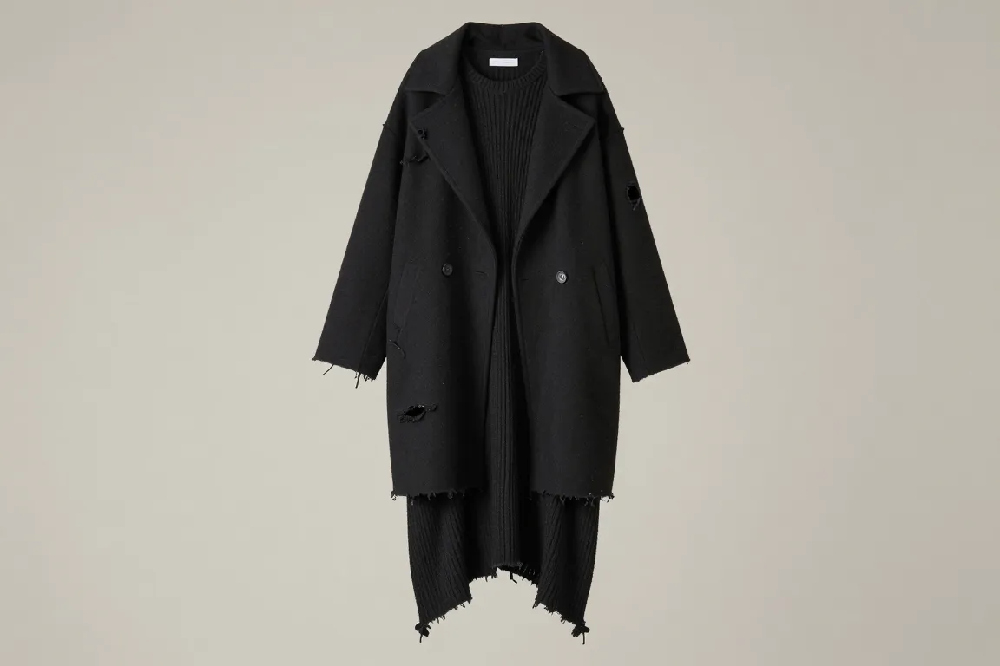

fashion · 1981–1999 · also: Japanese deconstruction, Hiroshima chic, Paris Japanese wave, Anti-fashion
The black, loose and torn clothes that Rei Kawakubo, Yohji Yamamoto and Issey Miyake showed in Paris from 1981. The clothes are oversized, asymmetric and unfinished, with no wish to show the body.

Core thesis
A garment is a space around the body, not a copy of it: it can be loose, torn, uneven and black, and still be beautiful.
Design principles
Cut the garment 20 to 40 cm wider than the body, so that it hangs in folds.
Wear black as the base, and use white, grey and indigo as the main other colours.
Leave an edge raw, a seam outside or a hem uneven.
Set a sleeve, a collar or a hem off the centre, so that the cut is asymmetric.
Make a cloth with texture: boiled wool, felt, a holed knit or a heat-set pleat.
Place a lump or a fold on the body, so that the outline changes.
Treat the cloth as the first idea and cut the garment from it.